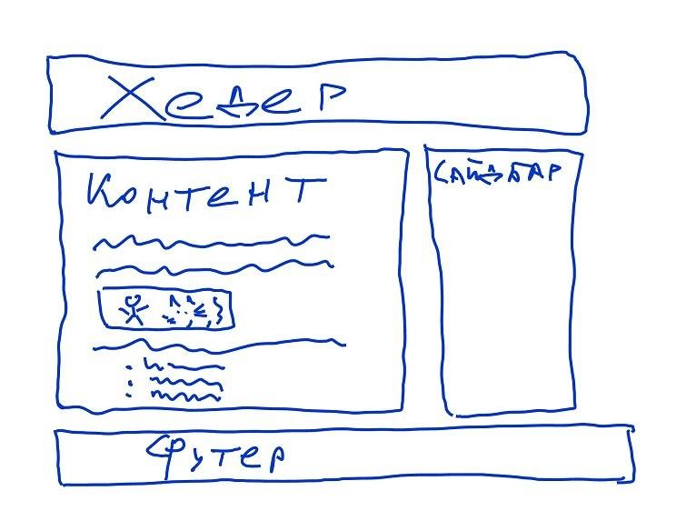
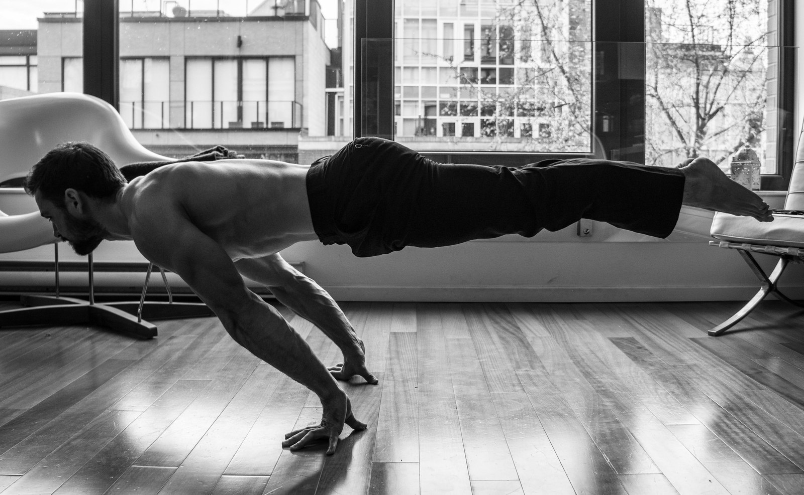
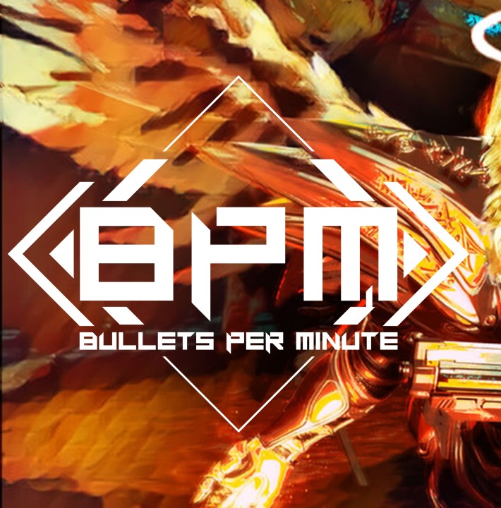

Родился и вырос в городе *****
Обучаюсь в НВГУ на 3 курсе
Группа ***
Email: [Данные удалены]
Нижневартовский государственный университет – первый вуз в Ханты-Мансийском автономном округе – Югре. В соответствии с приказом Государственного комитета СССР по народному образованию от 08 марта 1988 г., №256 12 июля 1988 г. в Нижневартовске был открыт филиал Тобольского государственного педагогического института им. Д.И.Менделеева. Филиал состоял из трех факультетов: физико-математического, филологического и факультета педагогики и методики начального обучения, на которых изначально работали 25 преподавателей и обучалось 150 студентов. С этого времени ведет отсчет высшее образование Югры.
 Грядущую специализацию я ассоциирую с веб-разработкой и версткой. Многократно я слышал мнение, что верстка — удел начинающих frontend’еров. Хотя фактически это важнейшая часть любого (почти) веб-проекта. Это то, что пользователи видят в первую очередь. На текущий момент качественная вёрстка (особенно проектирование блоков) в крупном проекте требует большого количества различных навыков.
 В свободное время посвящаю себя спорту или видеоиграм. Стараюсь развивать физическую форму и занимаюсь калистеникой — система силовых тренировок и упражнений с собственным весом. Привлекательность системы в её доступности. Для неё не нужны никакие снаряды, тренажёры и нет необходимости тратиться на что-либо. Для тренировок подойдет любая спортплощадка, а единственным снарядом будет собственное тело.
 А одной из любимых игр является BPM: BULLETS PER MINUTE это ритмичный шутер от первого лица с элементами rogue-like-игр, в котором предстоит вести огонь, прыгать и уклоняться от атак в ритме эпического саундтрека в стиле рок. В BPM все действия героя и врагов привязаны к ритму музыки. Враги будут проводить последовательности атак, подобных танцу, под эпическую рок-оперу. Для BPM источником вдохновения были ретро-шутеры 90-х. Он быстрый, неистовый и ритмичный.